The Mossery
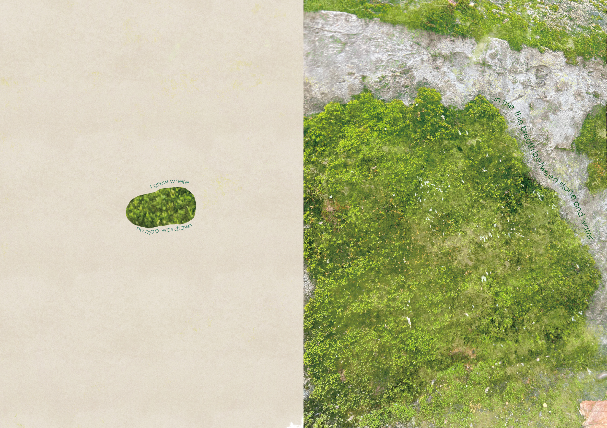
作品介绍
The MosseryThis project began with a river near my home. Atfirst, I mapped the area, sketched the scenery,and drew the people and animals that came toplay by the river. I also noticed that differentpeople came to do different things at differenttimes of the day, such as cleaning up the river inthe morning, fishing at noon, and children playing in the water in the evening. Gradually, my attention shifted from the broader landscape to the often-overlooked details: the moss quietly growing on the river stones These mosses, despite being constantly exposed to flowing water and changing weather, survive with their own unique tenacity. Each stone has moss of slightly different shapes collectively shaping their own miniature worlds. They are mostly ignored by passersby. My booklet is titled "Mossery", combining photography and painting to capture the vitality of these mosses. Through images and composition, I highlight their overlooked existence, their silent resilience, and the subtle atmosphere they create. By documenting these tiny lives, I illustrate that no matter what the circumstances, even the weakest life will do itsbest to create its own value.
The Mossery is a visualexploration of moss alongariverside. Beginning with mapsand sketches of the river and itspeople, the booklet gradually narrows its focus to the overlooked details-stones, water, and moss.Through photography, watercolor, and collage, the workcaptures the quiet resilience andsubtle beauty of these smalllives.
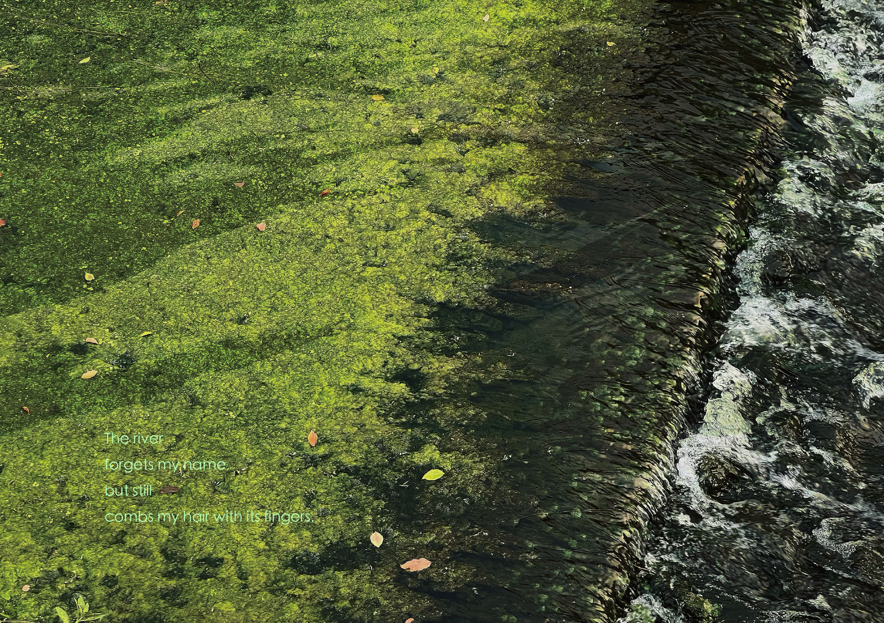
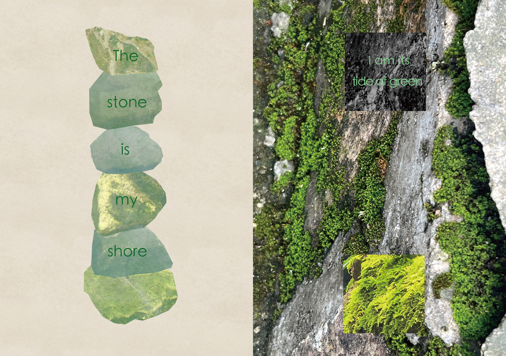
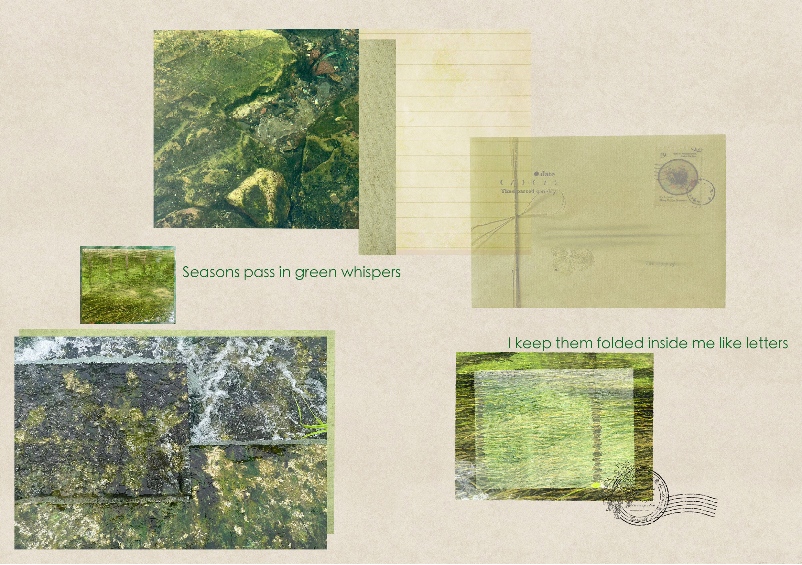
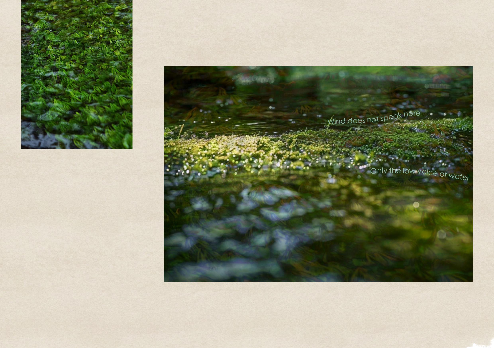
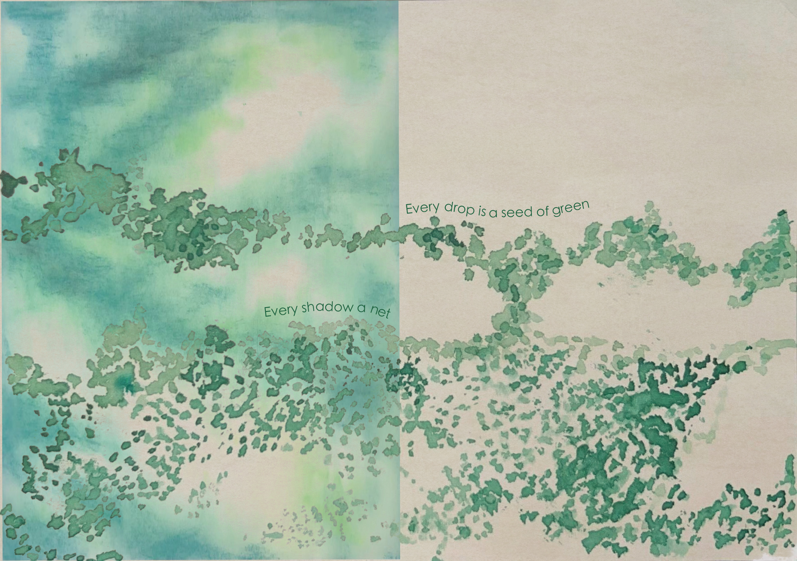
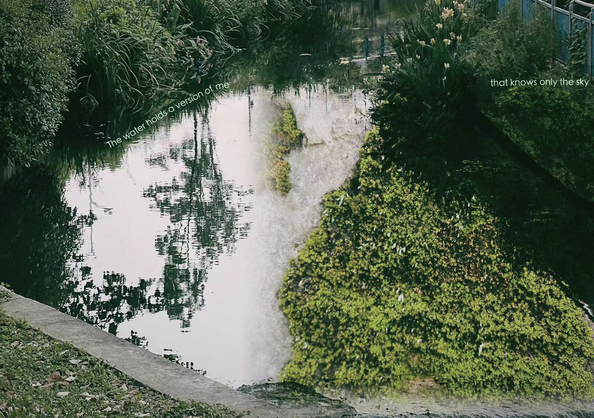
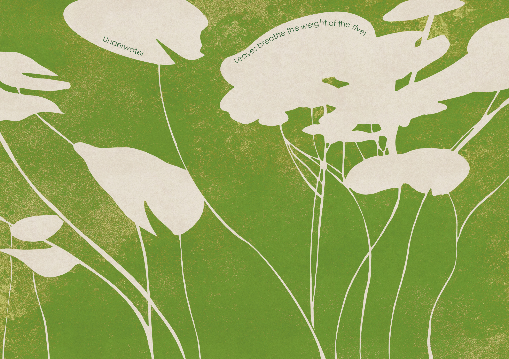
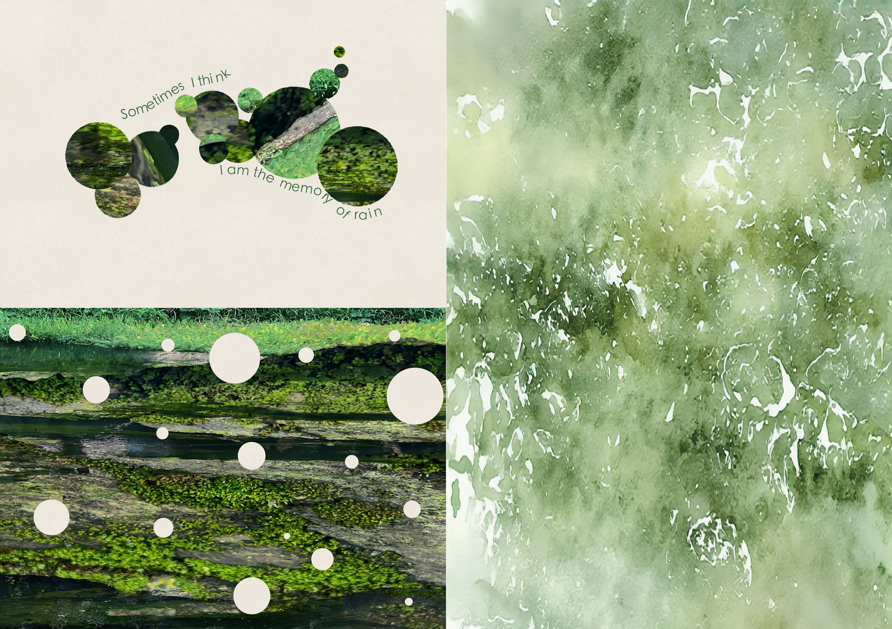
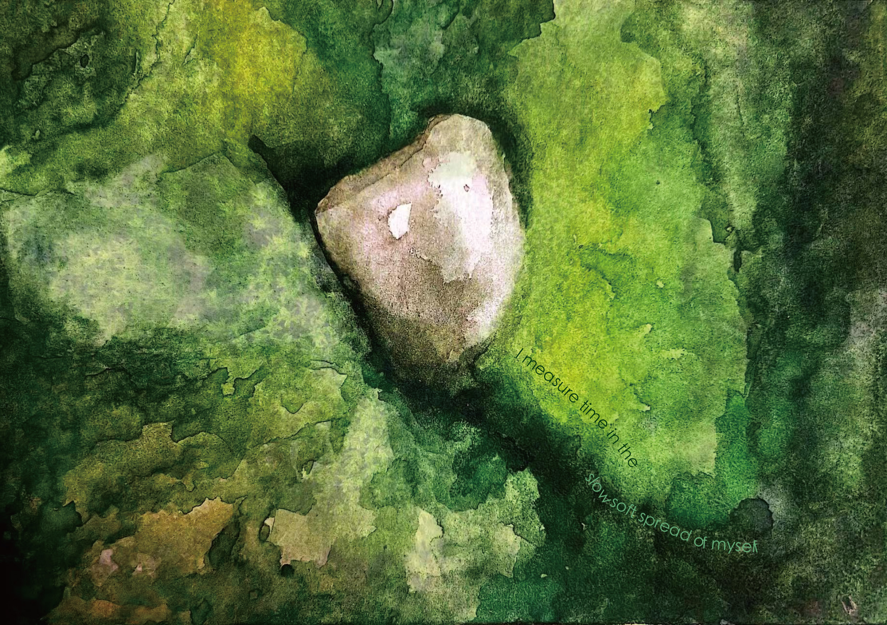
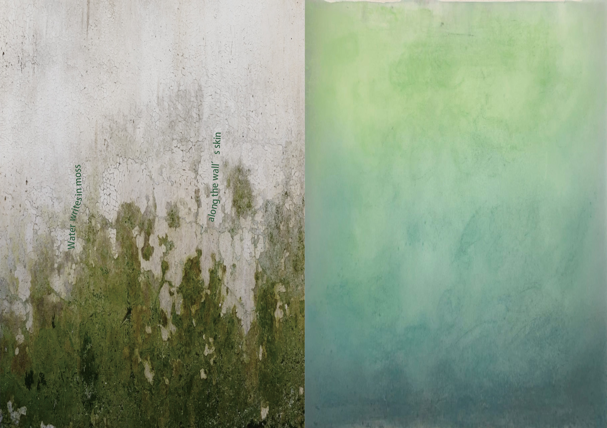
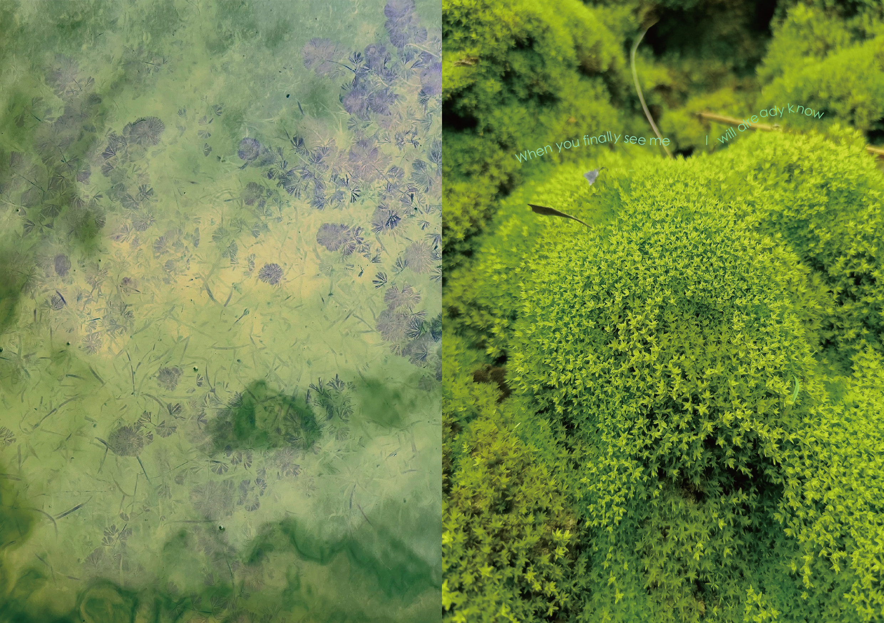